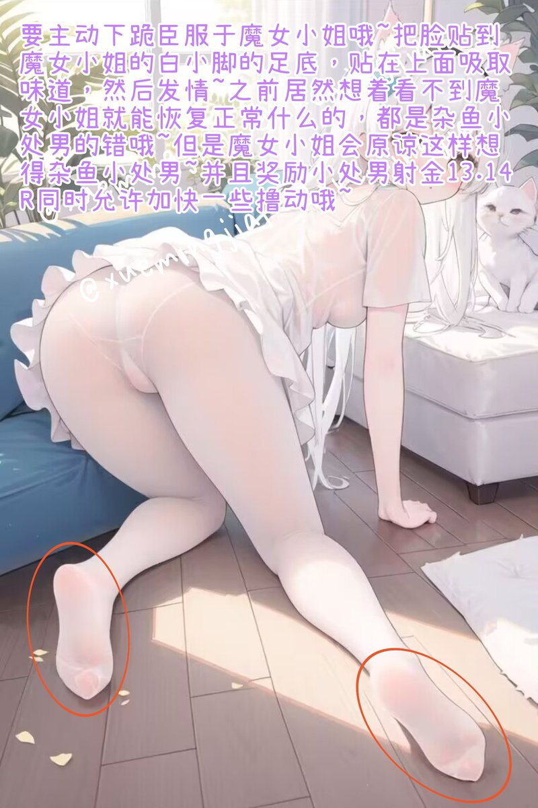

捏住自己“操控杆”的杂鱼小雏男是不是非常懊恼呢♪
明明好不容易要恢复正常啦，但是因为魔女小姐随意下达了一个命令就又要白给送死什么的w，太过分啦🖤
不过，杂鱼小雏男对着魔女小姐败北，听从魔女小姐的命令不是最基础的常识吗？
就跟看到魔女小姐的白丝小脚和屁股就必须下跪磕头握住操控杆撸动一样~

明明好不容易要恢复正常啦，但是因为魔女小姐随意下达了一个命令就又要白给送死什么的w，太过分啦🖤
不过，杂鱼小雏男对着魔女小姐败北，听从魔女小姐的命令不是最基础的常识吗？
就跟看到魔女小姐的白丝小脚和屁股就必须下跪磕头握住操控杆撸动一样~

好久不见，小雏男们~
觉得已经摆脱魔女小姐的控制啦？
毕竟那么久不发推什么的，早就被别的“坏女人”比下去啦♪
没关系哦，想要让屏幕面前的小雏男败北白给很简单啦，比如...
现在，立刻，马上，握住“操控杆”，进入发情状态，这是命令💜
开始重新送死，败北，白给，丧志，把智商丢掉吧🖤 https://t.co/KwrqHHApdd
觉得已经摆脱魔女小姐的控制啦？
毕竟那么久不发推什么的，早就被别的“坏女人”比下去啦♪
没关系哦，想要让屏幕面前的小雏男败北白给很简单啦，比如...
现在，立刻，马上，握住“操控杆”，进入发情状态，这是命令💜
开始重新送死，败北，白给，丧志，把智商丢掉吧🖤 https://t.co/KwrqHHApdd